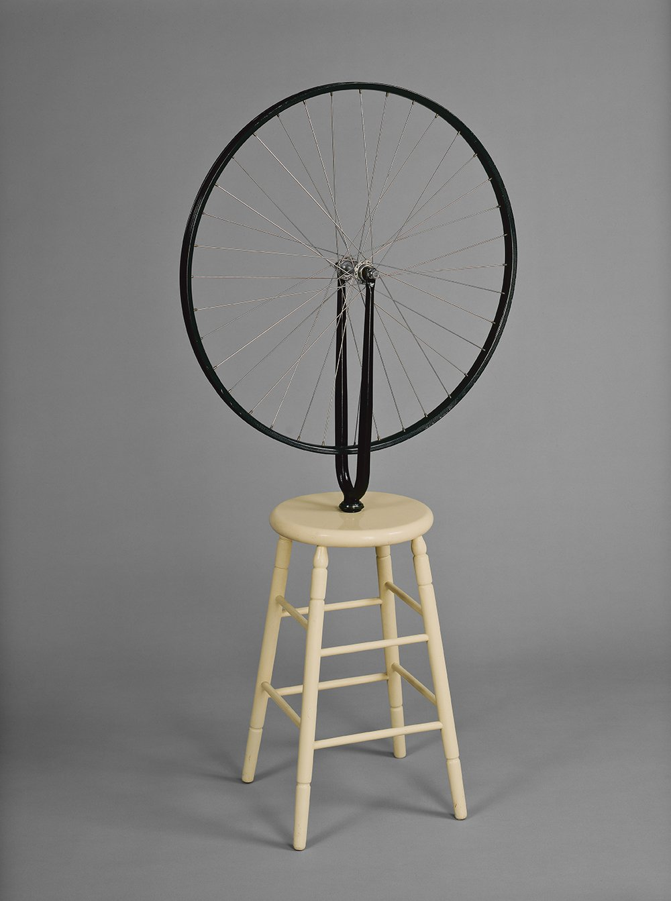
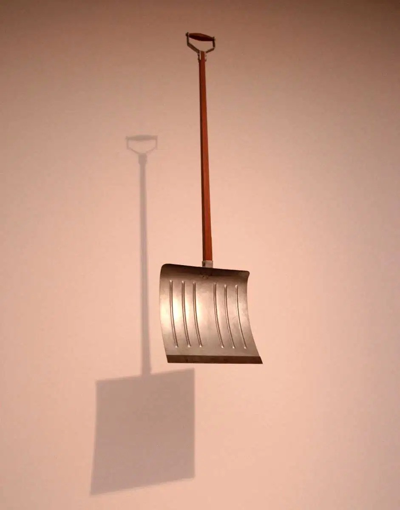
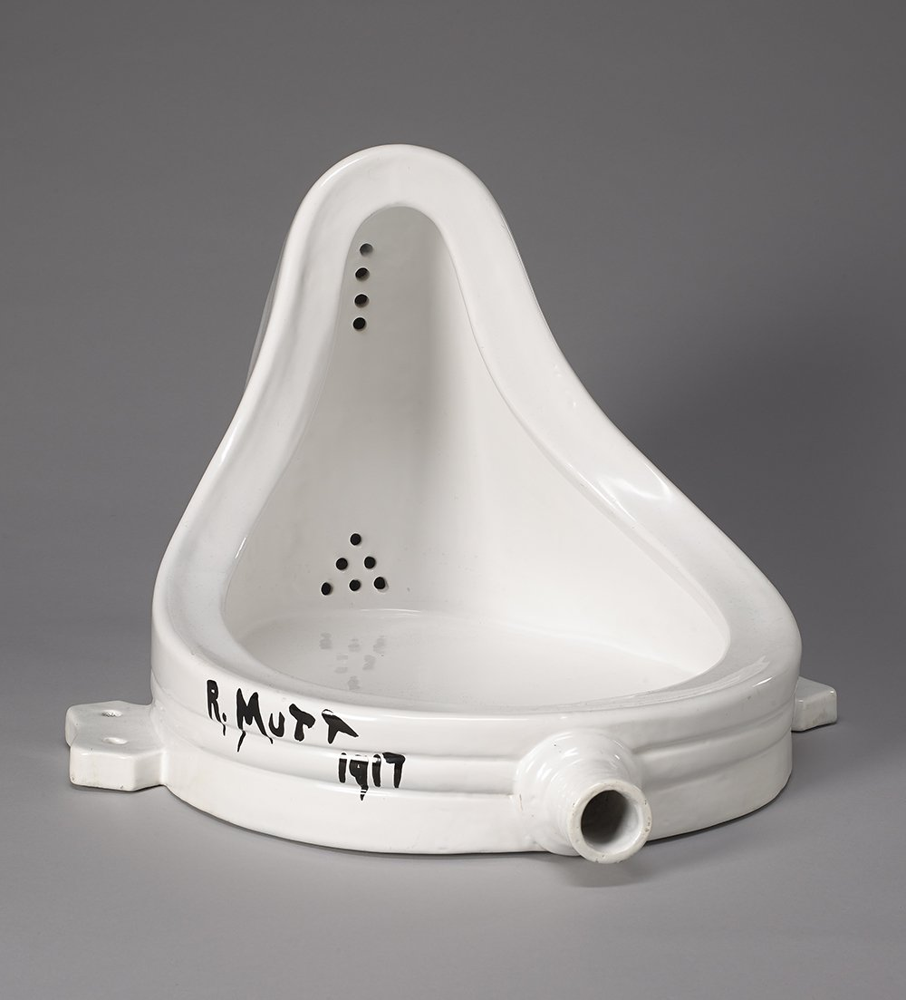
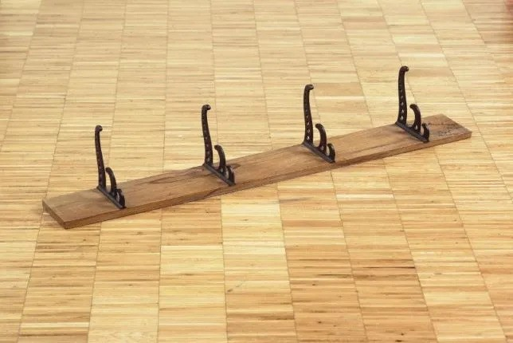
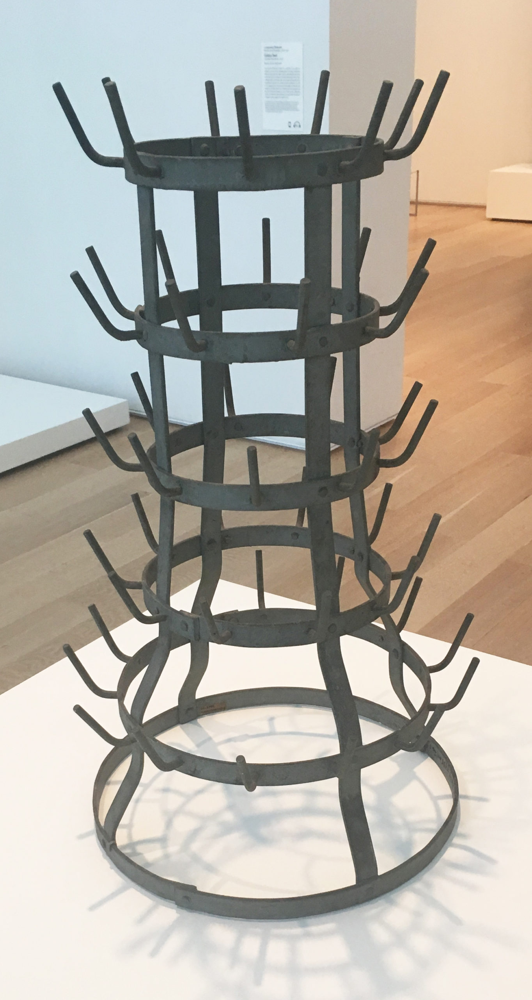

1 / 5

Bicycle Wheel - New York, 1951
“To see that wheel turning,” he once remarked, “was very soothing,
very comforting, a sort of opening of avenues on other things than material life of every day. I
liked the idea of having a bicycle wheel in my studio. I enjoyed looking at it, just as I
enjoyed looking at the flames dancing in a fireplace. It was like having a fireplace in my
studio.”
2 / 5

In Advance of the Broken Arm - Yale University, 1915
Duchamp acquired the initial version of this piece from a hardware
store in 1915. He signed and dated the shovel before suspending it from the ceiling of his
studio for display. The title, In Advance of the Broken Arm, humorously references the
shovel's intended use.
3 / 5

Fountain - Tate Modern, 1917
On his journey of protesting traditional art, Duchamp submitted an
upside-down urinal titled Fountain, signed “R. Mutt, 1917,” to the unjuried Society of
Independent Artists’ salon in New York, which promised to accept any artwork with a paid fee.
The board, suspecting a prank, rejected Fountain as not being true art. In response,
Duchamp, a board member, resigned in protest.
4 / 5

Trebuchet ("Trap") - Center Pompidou - 1917/1964
"lt stayed there on the floor and I would always knock against it at every moment. lt drove me mad and I said to myself : l've had enough of this; if it wants to stay on the floor, all right, l'm going to nail it''.
5 / 5

Bottle Rack - The Art Institute of Chicago, 1914/1959
Marcel Duchamp transformed an ordinary, mass-produced bottle rack into an artwork by designating it as such. Known as Bottle Rack, its original function was redefined by Duchamp's act of selection. When he moved to New York in 1915, he left the piece with his sister, who had discarded it by the time Duchamp later requested it. However, the concept behind Bottle Rack persisted, as its status as a ready-made inherently questioned originality due to its industrial production. Duchamp subsequently acquired and authorized new versions of the work.
❮
❯